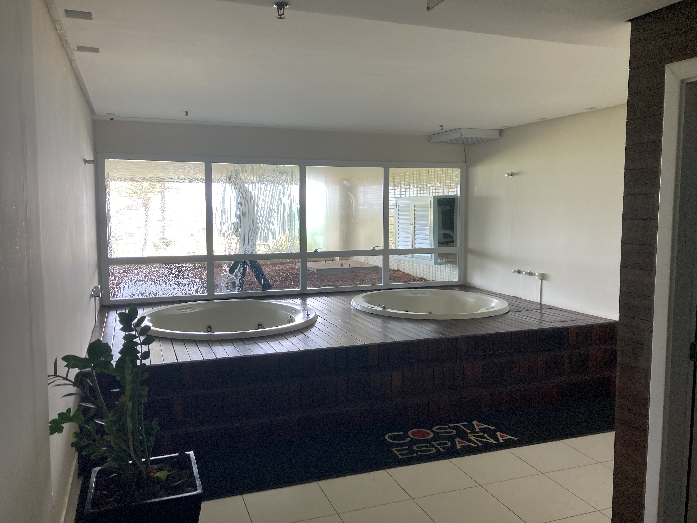

Banheiras da academia
Estudo de requalificação de área de relaxamento ligada à academia, evitando soluções caras ou incompatíveis com o uso real.

Área de relaxamento da academia na configuração existente.
Clique aqui para ver a imagem maior

Proposta para tornar a área mais acolhedora, coerente e integrada à linguagem do condomínio.
Clique aqui para ver a imagem maior
Banheiras da academia: de uso eventual a área de cuidado
As banheiras existentes na área da academia têm um potencial visual e espacial interessante, mas hoje parecem cumprir uma função muito limitada. Na prática, tendem a funcionar mais como um elemento de novidade — algo que eventualmente chama a atenção de visitantes, turistas ou moradores temporários — do que como uma amenidade usada de forma frequente pelos moradores.
Ao mesmo tempo, o condomínio ainda não possui uma área claramente pensada para cuidados pessoais leves, como manicure, estética rápida ou momentos de autocuidado. Isso faz com que alguns usos acabem acontecendo em locais inadequados, como a sala de estudo, o que prejudica a imagem do prédio e gera uma leitura pouco coerente para áreas que deveriam ter outra finalidade.
A oportunidade aqui não é simplesmente “tirar banheiras” ou criar uma nova sala do zero. O ponto é reconhecer que a área já existe, tem vista para o mar, possui uma base física interessante e pode ser ressignificada com inteligência. Em vez de manter um espaço pouco utilizado, o condomínio pode estudar uma proposta mais alinhada ao cotidiano real dos moradores.
Uma possibilidade seria transformar essa área em um pequeno ambiente de beauty spa ou autocuidado discreto, elegante e bem regulado, sem perder a atmosfera de relaxamento ligada à academia. A intervenção precisaria ser cuidadosa, com regras de uso, higiene, agendamento, materiais resistentes à umidade e compatibilidade com a rotina do prédio.
Também vale avaliar tecnicamente se parte do deck de madeira existente poderia ser aproveitada, reduzindo custo e desperdício. Isso não deve ser assumido de antemão, mas é uma hipótese interessante para estudo, desde que a estrutura esteja em bom estado e seja compatível com o novo uso.
A proposta, portanto, é tratar a área como um ativo já existente. Com uma leitura mais precisa do uso real, ela pode deixar de ser uma curiosidade pouco aproveitada e se tornar uma amenidade contemporânea, funcional e coerente com a valorização patrimonial do Costa España.